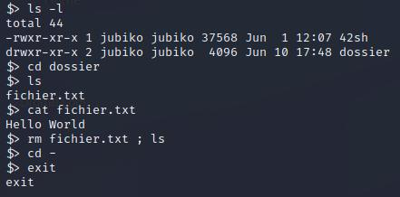

Sur ce site je présente mes projets de fin d'année et mes projets personnels, lien vers mon portfolio juste
ici
Ici je présente mes projets de façon simplifiée et je découvre les langages web

Vous pouvez accéder au projet ici, sinon si vous souhaitez une explication
moins technique restez ici ! C'est donc un projet que nous avons réalisé en groupe de 4, l'objectif
était de faire une version finale et
complète de ce même projet précedemment réalisé. Le but était donc de reproduire le fonctionnement d'un shell (ici TCSH), la
traduction signifie
"coquille" et l'image est assez parlante, il s'agit en fait d'un programme qui permet de faire le lien entre l'humain et la machine, en
français on appelle
ça l'invite de commande et c'est ce que vous pouvez voir juste à droite. Cette image est donc un exemple de ce que notre
shell était censé pouvoir faire, je vous laisse aller lire
le README sur mon github pour voir ce qu'on a réussi à faire du projet ainsi que le tester,
merci d'avoir lu !